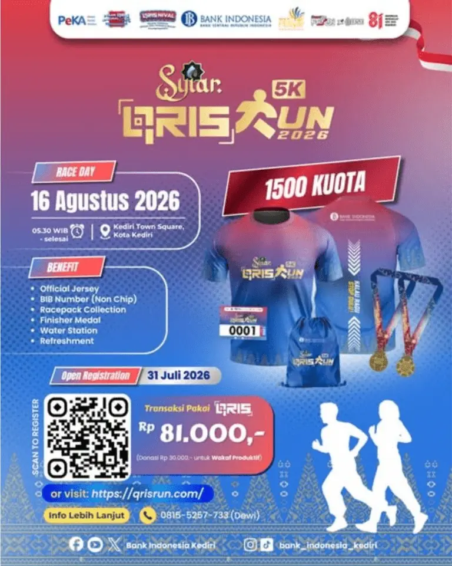
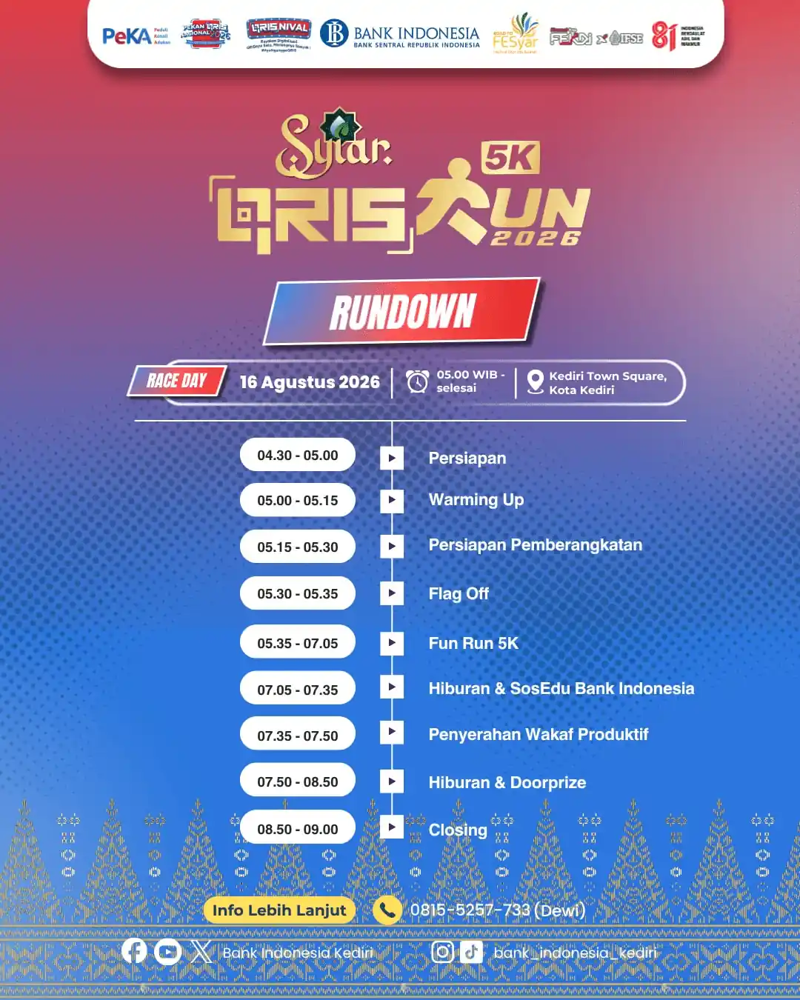

Mengambil titik start dan finish di Kediri Town Square (Ketos), ajang Syiar QRIS Run 2026 sukses digelar dengan antusiasme luar biasa. Kegiatan lari santai (fun run) sejauh 5 kilometer ini diselenggarakan oleh Kantor Perwakilan Bank Indonesia (KPw BI) Kediri sebagai puncak rangkaian festival QRISNIVAL 2026 dalam rangka menyambut Pekan QRIS Nasional (PQN) dan Road to Festival Ekonomi Keuangan Digital Indonesia (FEKDI).
Diikuti oleh lebih dari 1.500 pelari dan masyarakat dari Kediri Raya serta kota-kota sekitarnya, ajang ini mengusung semangat unik: "Berlari, Berwakaf, dan Bertransaksi dengan QRIS". Tidak hanya mengajak masyarakat mempraktikkan gaya hidup aktif dan bugar, Syiar QRIS Run menjadi sarana edukasi literasi keuangan digital terdepan di mana setiap aktivitas pendaftaran dan transaksi peserta terintegrasi dengan ekosistem QRIS dan donasi wakaf produktif.
Highlight & Keseruan Acara
- Start & Finish Kediri Town Square: Rute 5K yang ramah pelari melintasi jalan-jalan protokol Kota Kediri dengan pengawalan ketat dan pos hidrasi (water station) yang memadai.
- Peluncuran "Mall Siap QRIS Tap": Bertepatan dengan momen acara, Bank Indonesia Kediri meresmikan inovasi Mall Siap QRIS Tap (fitur NFC) pertama di Kediri, mempercepat transaksi belanja tanpa kontak.
- Gerakan Berlari Sambil Berwakaf: Kolaborasi bersama lembaga wakaf produktif, di mana partisipasi peserta turut berkontribusi dalam program sosial dan pemberdayaan ekonomi masyarakat.
- Panggung Hiburan & Doorprize Melimpah: Kemeriahan ditutup dengan live performance DJ, senam bersama, serta pengundian doorprize fantastis mulai dari sepeda listrik, Smart TV, tablet, smartwatch, hingga TWS.
Materi & Rundown Resmi Acara
Klik gambar untuk melihat poster resmi dan jadwal rundown acara dalam ukuran penuh:




Dampak Positif Bagi Kota Kediri
Keberhasilan Syiar QRIS Run 2026 membuktikan bahwa Kediri siap menjadi episentrum kegiatan olahraga dan digitalisasi keuangan modern di Jawa Timur bagian barat. Sinergi antara Bank Indonesia Kediri, Pemkot Kediri, jajaran kepolisian, serta masyarakat umum menciptakan standar baru pelaksanaan fun run yang aman, tertib, dan berdampak nyata bagi pertumbuhan UMKM lokal.